Science
With its innovative and open-access philosophy for science, OCEARCH is breaking through old, bad habits of scientific territoriality and the plodding pace of academic research. The result is a revolution in our approach to contemporary science
Dr. Robert Hueter
OCEARCH Chief Scientist
Methodology
Collaborative, inclusive and open-sourced
OCEARCH conducts research expeditions aboard the M/V OCEARCH, which serves as an at-sea laboratory. The M/V OCEARCH contains a 75,000 lb. capacity hydraulic platform designed to safely lift marine animals out of the ocean for access by a multi-disciplined research team.
Animals are caught from tenders, using handlines, and are guided by hand in the water on and off the lift. The animals are then brought to the submerged platform of the M/V OCEARCH vessel and the platform is raised. Once the animals are restrained and hoses of water have been set to enable a continuous flow of fresh seawater over the gills, the science team, made up of researchers and veterinarians, begins its process. Tags such as SPOT, acoustic, and accelerometer are attached, morphometrics are recorded, and samples, such as blood and tissue, are collected.
OCEARCH has carefully crafted its procedures to minimize stress and risk to the sharks during research expeditions. From the capture to the release, the tagging, handling, and sampling procedures follow established protocols by Institutional Animal Care and Use Committees (IACUC) of participating institutions.
The efficiency of this collaborative method greatly speeds up the process of researchers being able to publish their work. Studies published in academic journals are essential to guiding responsible ocean management policies. OCEARCH has been cited in 75+ published studies so far with many more on the way.
Published Research Papers See the 85+ studies12+ samples in 15 minutes
-
1. SPOT Tag
Devices capable of real-time tracking of fine and broad scale movements
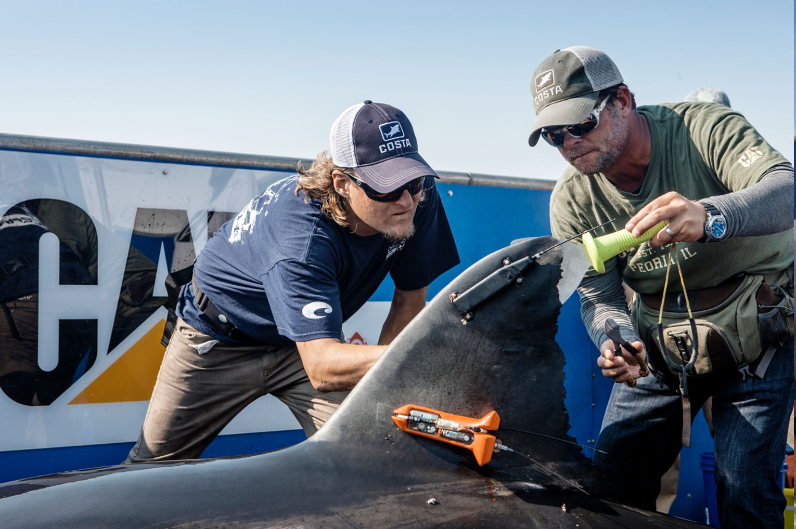 -
2. Blood Samples
Critical to understanding reproductive statuses of a sharks and stress levels the animals go through during the capture and tagging process.
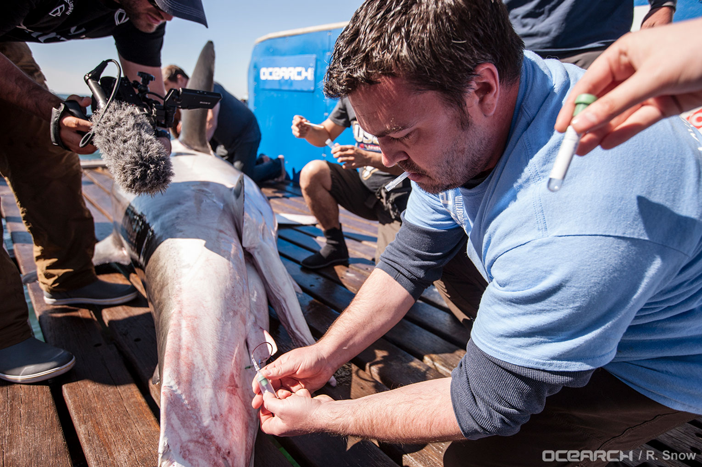 -
3. Accelerometer Data-Logger
Used to record fine-scale swimming behavior including how quickly white sharks recover after tagging.
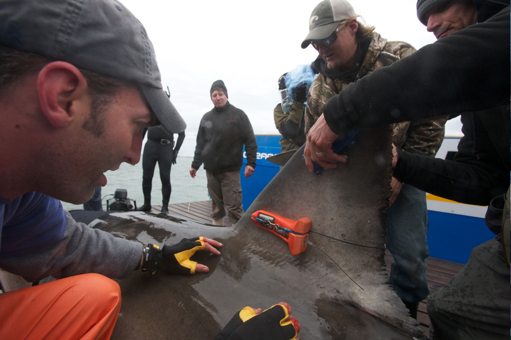 -
4. Ultrasound
Used to assess the reproductive condition and status of females. The equipment includes special goggles enabling visualization even in bright sunlight.

-
5. Fin Clip
Collected to determine the population connectivity (relatedness) and dispersal of white sharks for the development of a population management plan.
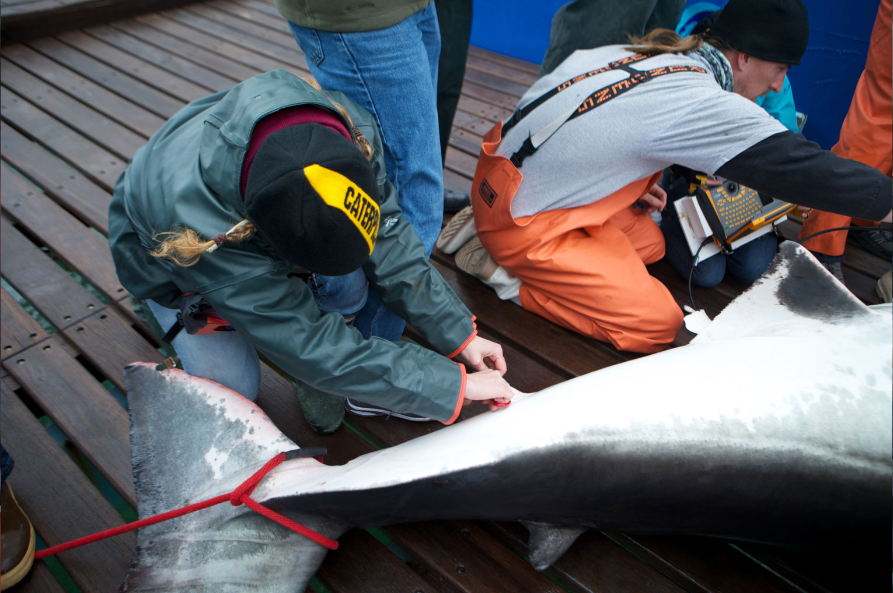 -
6. Muscle Biopsy
Help identify critical reproductive habits, examine diet and assess contaminant loads.
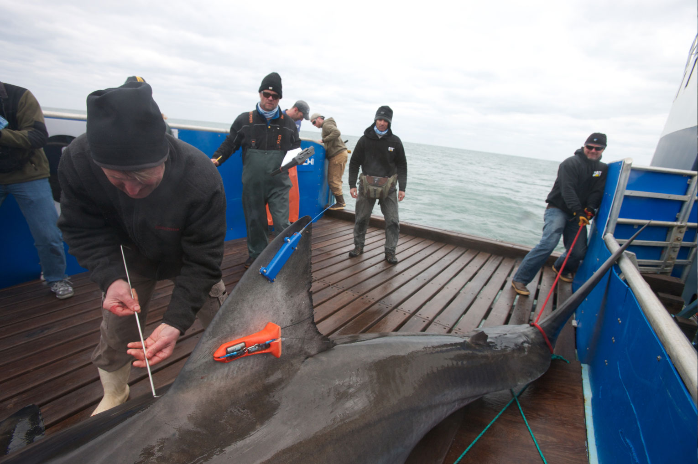 -
7. Parasite Collection
Collected from the oral cavity, gills, flanks, and coacal region of the sharks.
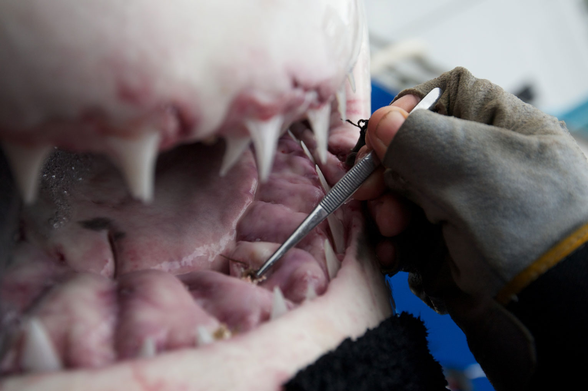 -
8. Body Measurements
Taken to determine size and compare them to other sharks with the same or different reproductive maturity. Also used in estimating weight and age at maturity.
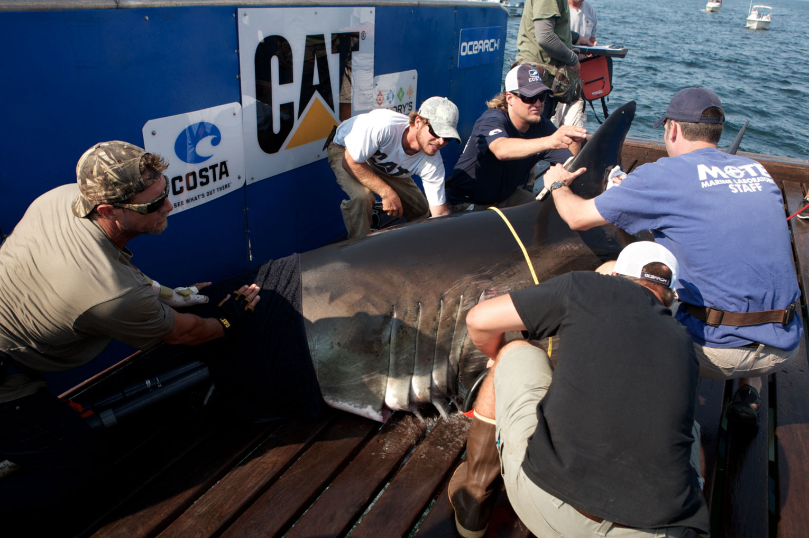 -
9. PSAT Tags
Non-real-time tag used to track movements and depth/temperature profiles.
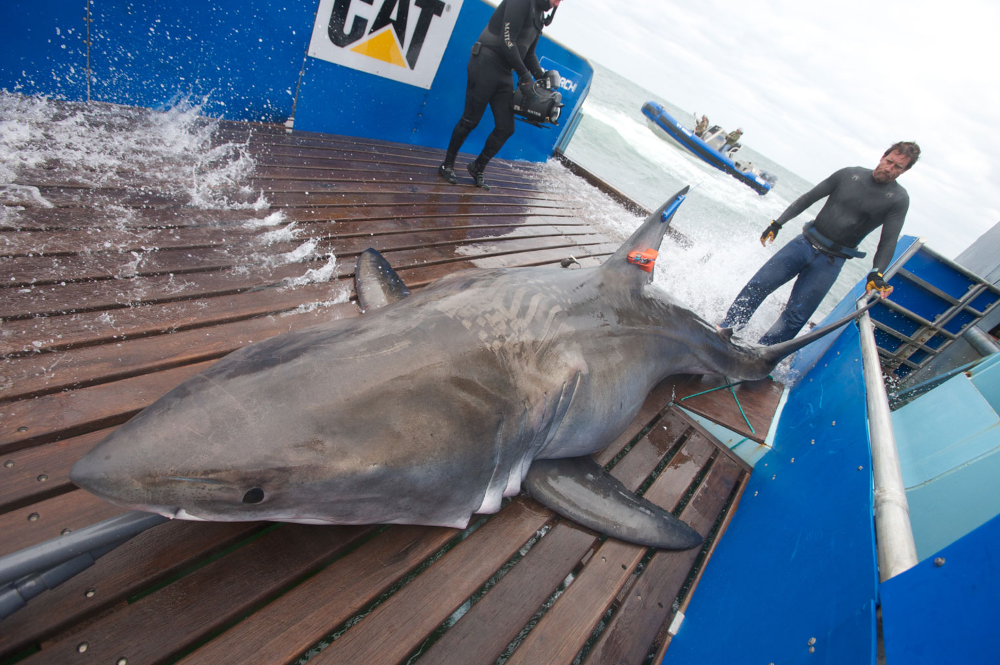 -
10. Acoustic Tags
Small sound-emitting devices that allow for receiver-dependent tracking of sharks in multiple dimensions.
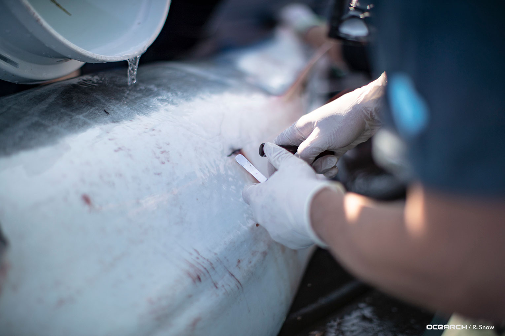 -
11. Bacteria
Bacterial samples are taken to study and address the bacterial roles in shark's rapid rate of wound healing and as a novel source for antibiotics.
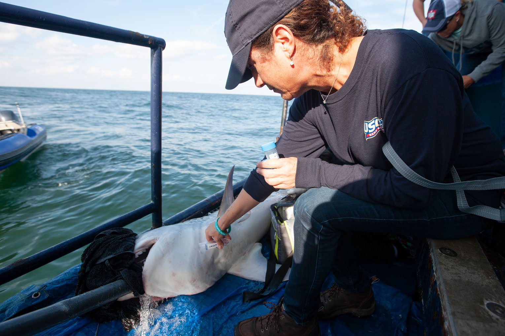 -
12. Semen Sample
Collected to assess the sperm motility, viability, and morphology of a shark. This not only adds to the health assessment, but also predicts sperm maturation and time for breeding.
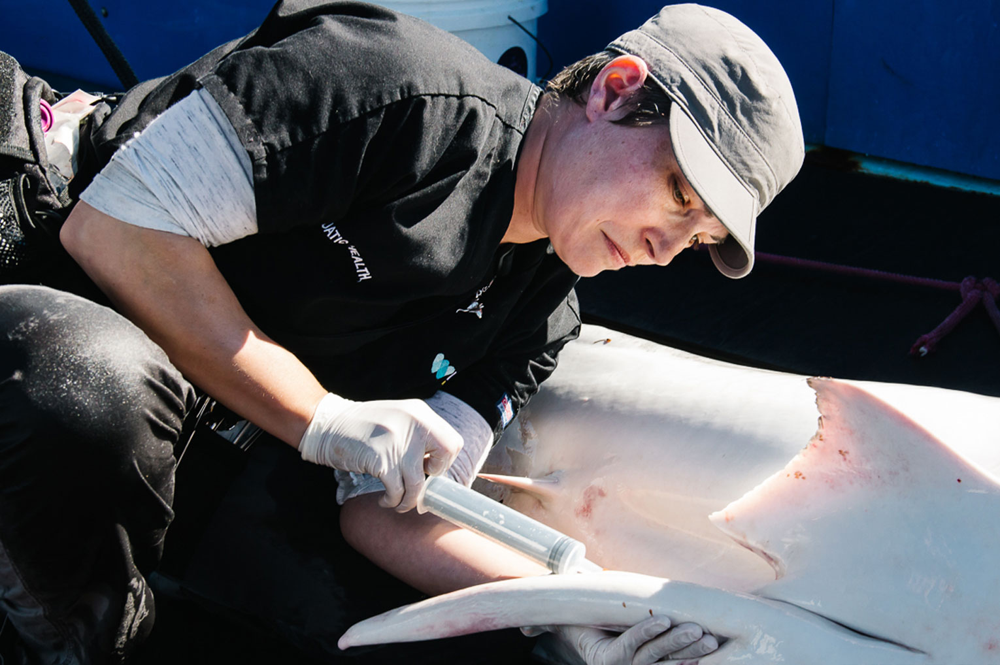
List of statistics from OCEARCH
-
45
Expeditions
-
200
Researchers
-
90
Institutions
-
75+
Published papers
- 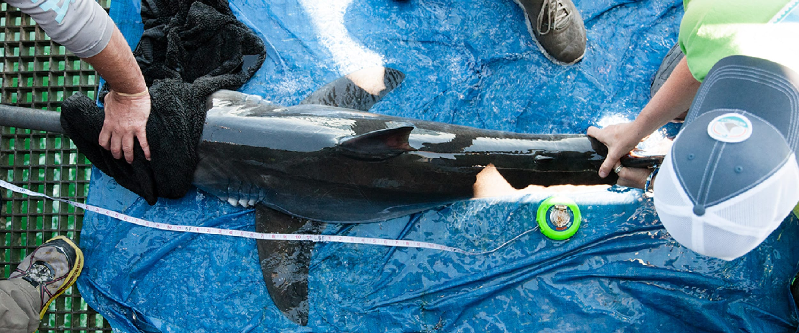
- 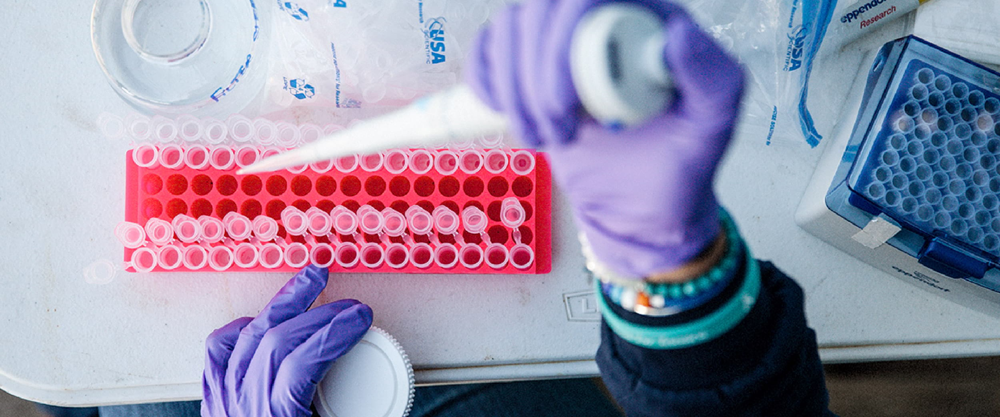
- 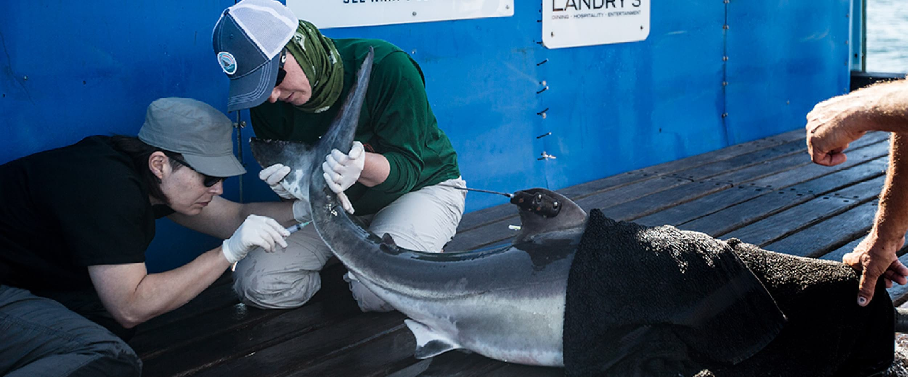
- 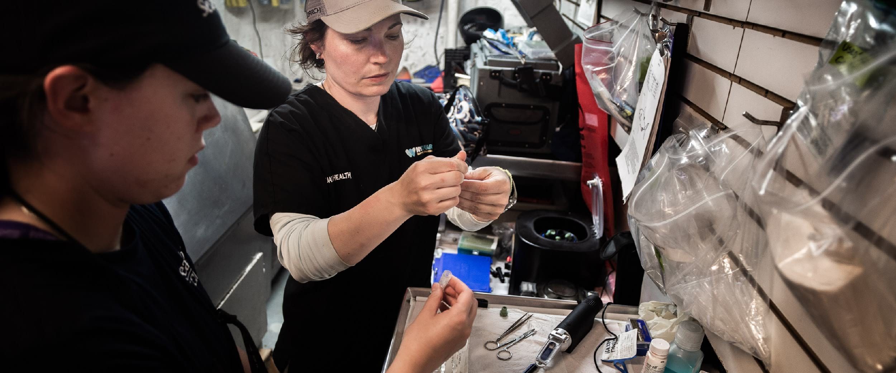
Faq
-
What is the OCEARCH process for tagging a shark?
Animals are caught from tenders, using handlines, and are guided by hand in the water on and off the lift. The animals are then brought to the submerged platform of the M/V OCEARCH vessel and the platform is raised. Once the animals are restrained and hoses of water have been set to enable a continuous flow of fresh seawater over the gills, the science team, made up of researchers and veterinarians, begins its process. Tags such as SPOT, acoustic, and accelerometer are attached, morphometrics are recorded, and samples, such as blood and tissue, are collected.
-
Can you successfully obtain the necessary amount of data from an alternate means of study?
No, the technologies and methods used represent the least invasive means of obtaining the data necessary to fill knowledge gaps regarding sharks. The majority of studies conducted on each shark could not be conducted on a free-swimming shark.
-
What type of samples do you collect from sharks?
Sharks are measured and sexed. Samples such as tissue, blood, fin clips, bacteria, sperm, and parasites are collected.
-
What type of studies do you run from the samples?
Many studies are run using the samples collected, including the assessment of the reproductive condition, reproductive cycle, genetic analysis, diet using stable isotopes and fatty acids, gestation period, inorganic and organic contaminant loads, the fecundity of white sharks in the Atlantic Ocean, studying parasite species presence, abundance, and infection sites in white sharks.
Stay Connected!
Get the latest tracker updates, events and giveaways sent directly to your inbox.